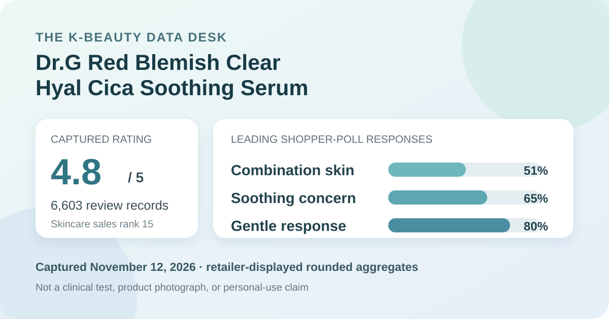
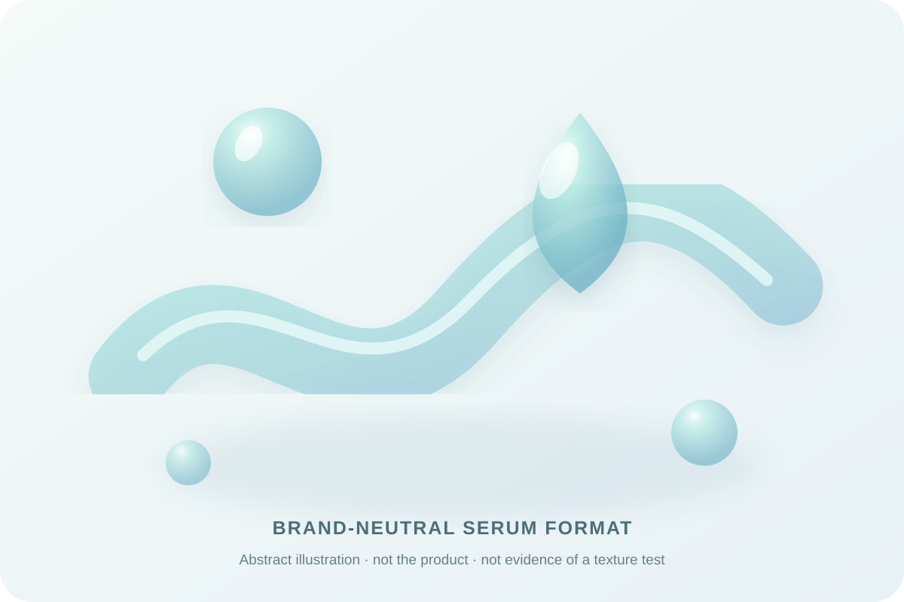

Data captured November 12, 2026. Olive Young Korea displayed the title “닥터지 레드 블레미쉬 클리어 히알 시카 수딩 세럼 50ml 리필 기획 (+50ml 리필)”; this article uses “Dr.G Red Blemish Clear Hyal Cica Soothing Serum” as a readable English label. It uses only the retailer's title, rank, aggregate rating, star distribution, and shopper polls. It does not copy or translate individual review text, names, or photos, and it makes no claim of firsthand use.

The short version: Dr.G Red Blemish Clear Hyal Cica Soothing Serum appeared at number 15 in the captured skincare sales ranking. The official product and review data agreed on the title and showed 4.8 out of 5 from 6,603 records. The displayed star rows were 85% five-star, 10% four-star, 3% three-star, and 1% in each of the two lower rows. Combination skin, soothing, and gentle led the shopper polls at 51%, 65%, and 80%. These are favorable retail signals, not proof of hydration, redness reduction, clinical soothing, or universal tolerance.
The displayed average was 4.8 stars from 6,603 review records. That is a substantial retail feedback base, but size alone does not make the data experimental. The aggregate does not reveal how linked packs are pooled, who chose not to review, whether every response came from the same formula version, or how the retailer's review eligibility and moderation systems affect the sample.
The official review statistics displayed these whole-number star shares:
The rows total 100% at the interface's displayed precision. An 85% five-star share describes a strongly positive captured rating mix. It does not mean that 85% of all purchasers had the same result, that the average is stable across seasons, or that the rating isolates the serum from discounting, bundle value, packaging, delivery, or other parts of the purchase experience.
The 5% combined share outside the four- and five-star rows is also worth retaining rather than smoothing away. A high average can coexist with mixed or poor experiences. The aggregate does not provide the circumstances behind those lower ratings, and this analysis does not inspect or reproduce individual review text to invent an explanation.
The skin-type panel displayed 51% combination, 27% dry, and 22% oily. Combination respondents made up a narrow majority of the visible distribution, while dry and oily responses together represented nearly half of the panel. This is useful for describing representation, not prescribing a skin type.
The interface did not show the panel denominator, participation rate, or a standardized assessment. Self-identified skin type can shift with climate, season, cleanser, medication, hormonal changes, current irritation, and the rest of a routine. The 51% figure therefore cannot establish that combination skin is the serum's best audience, and the smaller dry or oily shares do not prove weaker performance for either group.
The concern panel showed 65% soothing, 35% moisture, and 1% wrinkle or brightening. These rounded rows total 101%, a normal consequence of whole-number display rather than evidence of an error in the underlying responses. The panel mainly places the captured shopper conversation in soothing and moisture territory.
A concern-poll label is not a clinical endpoint. No standardized redness scale, colorimetry, clinician grading, lesion count, corneometer measurement, transepidermal-water-loss result, comparator, or controlled observation period was captured. The 65% soothing response cannot tell us whether visible redness changed, whether a blemish improved, how quickly any change occurred, or whether the serum outperformed another product.
The irritation panel displayed 80% gentle, 19% ordinary, and 1% felt irritation. The dominant response is favorable, but the nonzero irritation row matters. Even a large gentle response cannot predict an individual's reaction, particularly when the panel denominator, exposure duration, and severity scale are not shown.
The retailer aggregate cannot screen allergies, active dermatitis, a compromised barrier, medication use, or interactions with exfoliants, retinoids, acne treatments, and other routine steps. “Gentle” is a shopper response, not a dermatologist assessment or patch-test guarantee. People with known sensitivities should check the current regional label and seek appropriate professional guidance when needed.

The retailer categorizes the item as a serum. In general terms, serums are leave-on products intended to spread in a relatively thin layer before moisturizer or sunscreen. That broad format description does not verify this product's viscosity, slip, tack, scent, absorption speed, finish, pilling behavior, or compatibility with makeup.
I did not open, dispense, spread, smell, or layer the serum. The local illustration deliberately avoids the bottle, packaging, product photographs, and human skin. Real sensory behavior depends on the current formula, application amount, temperature, humidity, previous layers, and later routine steps. The aggregate polls cannot substitute for direct texture measurements or a controlled wear test.
“Hyal Cica,” “Red Blemish,” and “Soothing” are parts of the retailer-displayed product name. This article preserves them for product identification, but it does not independently verify a proprietary complex, ingredient source, concentration, delivery system, or mechanism. It also does not treat “blemish” language as proof of acne treatment.
The high rating and soothing-oriented poll cannot establish which ingredient caused the responses or whether the formula changes redness, inflammation, lesions, barrier function, or hydration. Those conclusions would require a verified formula, defined comparator, adequate sample, controlled conditions, measurement method, and stated time frame. Product naming helps identify the listing; it is not efficacy evidence.
Rank 15 describes one moment in Olive Young Korea's skincare sales list. It is not a quality score. Promotions, discounts, gifts, stock, advertising, seasonality, and short-term demand can all influence placement. The first 14 ranked listings were skipped because their identifiers or normalized product families already existed in this site's coverage.
The captured listing showed a 50 ml serum with a 50 ml refill, a ₩40,000 reference price, and a ₩25,750 displayed promotional price. Those details can change or depend on timing and checkout conditions. Confirm the live volume, formula, seller, stock, refill compatibility, gift terms, return conditions, and final price before buying.
Dr.G Red Blemish Clear Hyal Cica Soothing Serum was the first distinct unpublished product after 14 higher-ranked products or promotional configurations matched existing coverage. It passed the consistency check: the ranking, product page, and official review statistics used the same product title, and the statistics showed 4.8 stars from 6,603 records without a loading or access-control response.
The captured feedback is strongly favorable and centered on soothing. The 85% five-star row, 65% soothing response, and 80% gentle response are useful storefront facts with a clear date. They do not prove redness reduction, blemish treatment, hydration, barrier repair, clinical soothing, or universal suitability. The most defensible takeaway is that this listing had a mature, positive retail aggregate whose survey panels still require strict limits.
The captured official statistics showed 4.8 out of 5 from 6,603 records. The star rows were 85% five-star, 10% four-star, 3% three-star, 1% two-star, and 1% one-star.
Combination skin led at 51%, followed by dry at 27% and oily at 22%. That describes representation, not proven suitability.
No. It is a rounded shopper-poll response, not a controlled redness, irritation, or clinical soothing result.
No. The panel cannot predict allergies, sensitivity, interactions, or individual tolerance.
No. The analysis uses retailer-displayed aggregates only and does not claim firsthand use.
Source: Olive Young Korea product listing for Dr.G Red Blemish Clear Hyal Cica Soothing Serum 50 ml refill plan, captured November 12, 2026. Rank, price, availability, gifts, counts, percentages, and linked configurations can change after capture.
Published by The K-Beauty Data Desk. This is an editorial analysis of retailer-displayed aggregates, not medical advice or a substitute for the current product label.
← All reviews · Review-volume rankings · Skin-poll explorer · Methodology